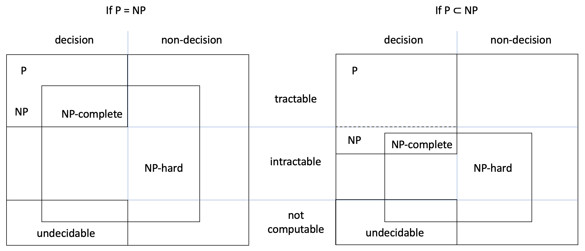

27.4. Undecidability
Having looked at how functions can analyse other functions and themselves, let me introduce three problems about functions that are not computable. They all happen to be decision problems. Non-computable decision problems are simply called undecidable problems.
27.4.1. The halting problem
Our first undecidable problem is the halting problem: given an algorithm and a valid input for it, i.e. that satisfies the preconditions, will the execution of the algorithm terminate for that input? (Note that we’re not interested in the output or whether it’s correct.) In terms of Turing machines, the problem is: given the transition table and the initial tape content, will the machine eventually stop?
We’ll assume the algorithm has a single input value, to make the examples concrete. In terms of Python, what we want is a static analysis function with this heading.
[1]:
from typing import Callable
def halts(function: Callable, value: object) -> bool:
"""Return True if and only if function(value) eventually stops."""
# do some highly sophisticated static analysis here
Note that halts must do static analysis: it cannot execute function because if the latter enters an infinite loop for value, so would halts. We would never get the desired False output to know that function doesn’t halt on value.
It’s possible to statically analyse some functions and determine whether they enter an infinite loop. For example, we could check if a function has no while- or for-loops, no recursive calls and only uses operations of which we know they halt. In such cases, the function will stop for every input value and halts would return True.
While such restricted forms on static analysis are possible, halts doesn’t exist: nobody will ever be able to write a general algorithm that can decide whether any given algorithm halts on any given input.
Let’s assume that function halts did exist. Then we could write functions that call it, like this one:
[2]:
def opposite(f: Callable) -> bool:
"""Return True if and only if f(f) doesn't halt.
Preconditions: f takes a function as argument
"""
if halts(f, f): # does f(f) halt?
while True:
pass
return False
else:
return True
Function opposite uses halts to check if the call f(f) eventually stops. If it does, opposite gets into an infinite loop and never returns False. If f(f) doesn’t halt, then opposite does, returning True. In summary, opposite(f) halts if and only if f(f) doesn’t.
For example, opposite(help) doesn’t halt because help(help) does: the help function prints its own docstring and stops, as shown in the previous section.
Now comes the sting in the tail. What would happen if we call opposite on itself? How will opposite(opposite) behave? As I just mentioned,
opposite(f)halts if and only iff(f)doesn’t.
Replacing f with opposite, we have that
opposite(opposite)halts if and only ifopposite(opposite)doesn’t.
In other words, we have a function call that stops and doesn’t stop at the same time: an impossible behaviour. This means that function halts can’t exist: otherwise opposite would be able to call it and we’d get into this paradox.
Info: Scooping the loop snooper is an entertaining and rhyming rendition of the above proof. This kind of proof is called a proof by contradiction: we assume the opposite of what we want to prove (here we assume halts does exist) and obtain a contradiction, thereby showing that our assumption was wrong.
We’re asking function halts to predict how opposite(opposite) will behave and once we know what the prediction is, we do the opposite. So it’s not possible to make a correct prediction for function opposite with input opposite. And if there’s no algorithm that can solve the halting problem for one particular function and input, then there’s no algorithm that can solve the problem for any function and input, so the halting problem is undecidable.
27.4.2. The totality problem
The halting problem asks if a given algorithm stops on one given input. Unsurprisingly, the more general totality problem (does a given algorithm stop for all its valid inputs?) is also undecidable.
The undecidability of the totality problem has great practical consequences. No matter how sophisticated our programming tools will ever be, they will never be able to determine for any program whether it will enter an infinite loop for some input. They might be able to tell us the answer for some programs with particular characteristics, but not for all. Since there’s no systematic way to detect infinite loops, the practical consequence is that sometimes apps still ‘freeze’, even if they were well tested, because tests can’t cover all possible inputs.
27.4.3. Rice’s theorem
At this point you may be thinking that the undecidability of the totality problem is not a big deal. Only a few programs may get into infinite loops. Most programs have other kinds of errors: division by zero, indices off by one, etc. Unfortunately, detecting any of those issues is an undecidable problem too.
In fact, Rice’s theorem states that all non-trivial decision problems about the behaviour of programs are undecidable. ‘Non-trivial’ means the decision can’t be the same for all programs. For example, the decision problem ‘Does the program execute zero or more steps?’ is trivial: the answer is always ‘yes’ and hence the problem is decidable.
Note that problems about the structure of programs are decidable. For example, the decision problem ‘Does the program contain a for- or while-loop?’ is about the program’s syntax, not its behaviour, and hence it’s decidable.
Info: The theorem is named after Henry Rice, who proved it in his 1951 PhD thesis.
The practical consequence of Rice’s theorem is that most software systems have errors, even when developed by very smart people following best practices, because there’s no magic static analysis wand that can determine whether a program is correct. And no advance in AI or quantum computing will turn non-computable problems into computable ones.
27.4.4. The equivalence problem
The halting and totality problems have a single algorithm as input, but we can also define problems on two or more algorithms. The most famous is the equivalence problem: given two different algorithms for the same problem, do they compute the same output for the same valid input?
An algorithm that solves the equivalence problem would be of great value to the M269 tutors and all programming teachers. We would write one model solution for each programming assessment and the equivalence problem algorithm would decide if your submission is equivalent to the model solution and thus correct or not. (Assuming we write correct model answers, which we tend to do.) If the equivalence problem algorithm returns false, your tutor would still have to figure out, through tests or reasoning, for which inputs your and the model programs diverge.
More importantly, having an algorithm for the equivalence problem would allow programmers to check successive versions of their programs to make sure that their changes to the efficiency or structure of the code don’t break the functionality.
Unfortunately, that algorithm doesn’t exist: the equivalence problem is also undecidable.
Like the halting and totality problems, the equivalence problem can be solved for some particular programs. For example, it’s possible to write a Python function that checks if two Python functions are the same, except for differences in the docstring, comments, spaces and the names of variables. However, it’s impossible to write an algorithm that solves the equivalence problem for any two programs.
27.4.5. Reduction and computability
You learned in Chapter 26 how polynomial-time reduction can be used to classify problems as tractable or NP-hard. Here you’ll see how it can be used to classify problems as computable or not.
If problem A can be reduced to problem B, then we have the following algorithm for A:
Transform the inputs of A into those of B.
Compute the output of B using any algorithm for B.
Transform the output of B into the one for A.
Steps 1 and 3 do not have to take polynomial time for A to be solvable: what matters is that there must be some algorithm for B we can use. In summary, a reduction of A to B tells us that if B can be solved, so can A.
Note: If problem A reduces to a computable problem B, then A is computable too.
What if we’re told that A reduces to B, i.e. steps 1 and 3 are possible, but that A can’t be solved, i.e. there’s no algorithm for A? In that case, step 2 isn’t possible: there’s no algorithm for B. If there were one, the three steps would form an algorithm for A, which we’re told is not possible. In summary, a reduction of A to B tells us that if A can’t be solved, neither can B.
Note: If a non-computable problem A reduces to problem B, then B isn’t computable either.
This fact allowed computer scientists to reduce the halting problem to the totality, equivalence and other problems to prove they are undecidable too.
27.4.6. The problem landscape
The diagram in Chapter 26 covers all computable problems, because each one is either tractable or intractable and is either a decision problem or not. If we add non-computable problems to that diagram, we get:
The new diagram shows that the undecidable problems are the intersection of the non-computable and the decision problems.
The new diagram also shows that the NP-hard class also includes non-computable problems. For example, it includes the halting problem.
As explained before, if an NP-hard problem A reduces in polynomial time to problem B, then B is NP-hard too. It has been shown that there’s a polynomial-time reduction of the SAT problem, which is NP-hard, to the halting problem, which is therefore NP-hard too.
Exercise 27.4.1
Knowing that the halting problem reduces in polynomial time to the totality and to the equivalence problems, does it mean that these two problems are NP-hard too? Explain why or why not.
Exercise 27.4.2
Bob is confused.
How can Alice explain to Bob what’s wrong with his reasoning?